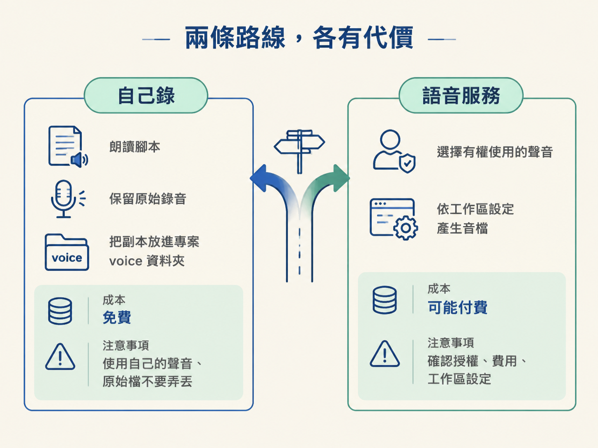
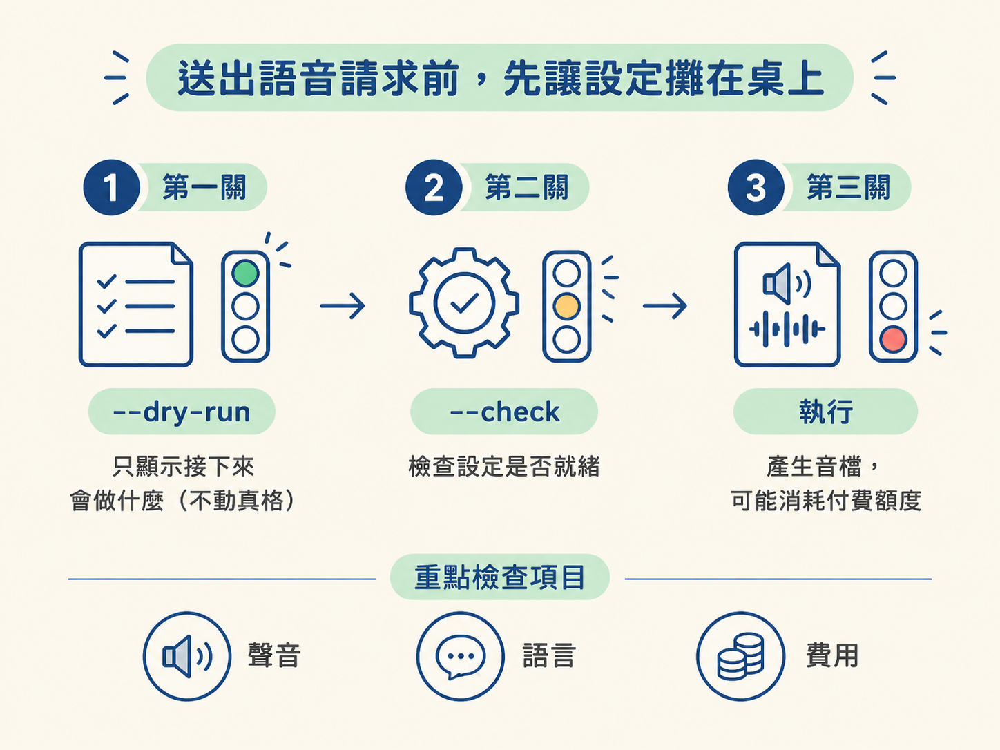

上一課你已經審好腳本，並把它存進 01_voice/script.md。現在文字準備好了，下一個問題就是：誰來念？這一步位在腳本定稿之後、完整聽檔之前，產出會是一段放在同一個專案裡、可以播放的旁白音檔。
看起來只是選聲音，其實要先確認兩件很實際的事：這個聲音你有沒有權利使用，以及它會不會產生費用。你可以自己錄，也可以交給語音服務處理；兩條路的取捨不一樣，先比清楚再動手，才不會做到一半才發現聲音不能用，或意外花了錢。
| 路線 | 怎麼做 | 成本 | 先注意什麼 |
|---|---|---|---|
| 自己錄 | 朗讀腳本，請助理把副本放進專案，並保留原始檔 | 免費 | 使用自己的聲音，原始錄音不要弄丟 |
| 語音服務 | 選擇自己有權使用的聲音，按照工作區指示產生音檔 | 可能付費 | 確認授權、費用與工作區設定 |
選自己錄時，你負責把腳本念出來；AI 助理的工作是把錄好的檔案複製一份，放進專案的 voice 資料夾，並整理成工作區能接受的格式。原始錄音要留在原本的位置，專案裡使用的是副本。
這條路的好處是聲音完全屬於你，也不用支付語音服務費用。代價是你要自己安排錄音，並確認錄音檔能正常播放。
選語音服務時，AI 助理可以依照工作區設定，把腳本轉成音檔；但你要先確認使用的聲音確實有授權，而且費用在你能接受的範圍內。這條路省下錄音時間，卻多了授權、額度與設定等需要檢查的地方。

不確定該走哪條路時，先不要急著執行。依序問自己：
你也可以把檢查分工記成一句話：AI 可以準備與執行，我負責確認聲音、授權和費用。 三個問題都得到明確答案後，再往下一步走。
這裡很容易踩到一個坑。示範用的製作環境裡，講者使用的是自己聲音的複製品，並透過 11 Labs 這類服務來念稿。那是他的帳號與授權設定，不是每個專案都能直接套用的現成選項。
你的專案可以使用的，是你自己的錄音，或是你自己帳號底下有權使用的服務設定。看到別人用某個聲音效果很好，不代表你可以照抄。授權寧可在送出前確認，也不要等音檔做完後才發現用錯。
如果你決定使用語音服務，不要直接對助理說「開始做」。先請它說明這次會使用哪個聲音、哪種語言、可能產生多少費用，以及工作區是否已經設定完成。你確認後，才送出真正會產生音檔的請求。
準備好的工作區通常會提供「先檢查、後執行」的指令。大致像這樣：
python anim.py speak my-lesson --dry-run # 只顯示接下來會做什麼
python anim.py speak my-lesson --check # 檢查設定是否就緒
python anim.py speak my-lesson # 真正產生，可能用到付費額度先用 --dry-run 看接下來會做什麼，再用 --check 確認設定是否就緒。你要檢查的重點包括聲音、語言與費用；都確認無誤後，才執行最後一個可能消耗付費額度、真正產生檔案的指令。

這一課不需要建立新專案。請留在 1.3 留下來的同一個專案裡：腳本已經在 voice 階段，旁白也放在同一個地方。完成後，你應該能在專案裡找到一段可以播放的音檔，接著在下一課把 Sam / Friday 的整段旁白聽完，檢查漏字與節奏。
送出前，快速確認這三件事：
把整課收成一句：沒有有權使用的聲音，就自己錄；要用語音服務，就先確認授權與費用，看過設定再送出。
旁白有兩條路線：自己錄，免費、使用自己的聲音，而且要保留原始錄音；語音服務則可能付費，並且必須使用有權使用的聲音。示範者的複製聲音是他自己的設定，不能直接照搬。走服務這條路時，先請助理說明設定與費用，再用--dry-run／--check檢查，最後才執行真正的指令。整個過程都在同一個專案裡完成，不需要另建專案。
聲音有了之後，最後一關是坐下來把它聽完。下一課會帶你開著腳本完整播放，抓出漏字和節奏問題，針對個別句子修正，並記錄最後選定的版本。